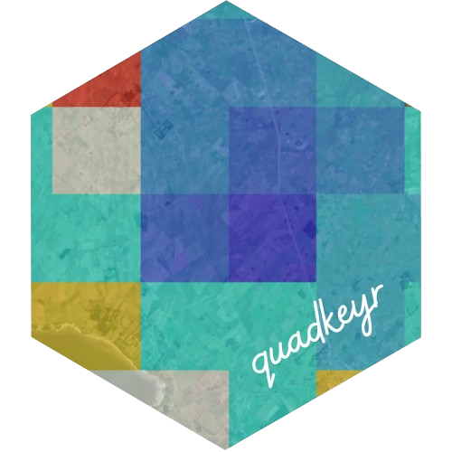

Create and save raster images for different dates and times
Source:R/polygon_to_raster.R
polygon_to_raster.RdCreates one raster by each date and time reported and
saves it as a .tif.
Arguments
- data
A
sfPOLYGON data.frame with the variable we want to represent in the raster.- nx
Integer; number of cells in x direction.
- ny
Integer; number of cells in y direction.
- template
A
sfPOLYGON data.frame- var
The column name of the variable to plot.
- filename
Select a name for the file. The date and time will be included automatically in the name.
- path
Path where the files should be stored.
Examples
# \donttest{
files <- read_fb_mobility_files(
path_to_csvs = paste0(system.file("extdata",
package = "quadkeyr"
), "/"),
colnames = c(
"lat", "lon",
"quadkey", "date_time",
"n_crisis", "percent_change"
),
coltypes = list(
lat = "d",
lon = "d",
quadkey = "c",
date_time = "T",
n_crisis = "c",
percent_change = "c"
)
)
#> New names:
#> • `` -> `...1`
#> New names:
#> • `` -> `...1`
#> New names:
#> • `` -> `...1`
# Get a regular grid and create the polygons
regular_grid <- get_regular_polygon_grid(data = files)
# Keep only the QuadKeys reported
files_polygons <- files |>
dplyr::inner_join(regular_grid$data,
by = c("quadkey")
)
# Generate the raster files
polygon_to_raster(
data = files_polygons,
nx = regular_grid$num_cols,
ny = regular_grid$num_rows,
template = files_polygons,
var = "percent_change",
filename = "cityA",
path = paste0(
system.file("extdata",
package = "quadkeyr"
),
"/"
)
)
# }